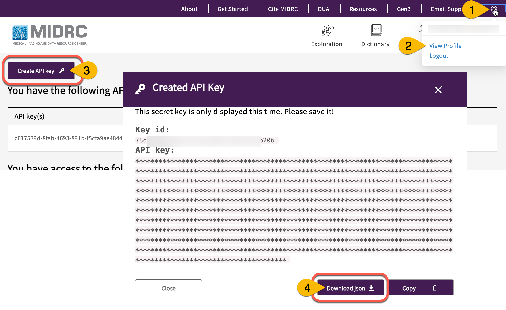

Tutorial Nextflow Workflows¶
Get set: Download necessary credentials and software¶
Be ready to execute the tutorial workflows below by gathering credentials and installing necessary software.
MIDRC credentials¶
You need to generate a MIDRC credentials on the profile page of the MIDRC portal to download GUIDs in the workspace. For this, please go to data.midrc.org, click on the user icon in the right corner (#1), and open the Profile page (#2). Click on Create API Key (#3). A pop-up window will appear with the key. If you scroll down slightly, you can see the button to download the credentials as a JSON. Credentials are valid for 1 month.

Get and replace placeholder values from the Nextflow config¶
You can find the values to replace the placeholders in thequeue, jobRole and workDir fields in the nextflow.config file in your Nextflow workspace. Directions for finding this file are at the bottom of the "Welcome to Nextflow" page that opens when your Nextflow workspace first opens. These placeholder values will need to be replaced in each of the various tutorial Nextflow notebooks.
Note that you should only copy/paste the value to replace placeholder for each field; do not copy/paste larger sections of the nextflow config, or there could be indentation problems that interfere with the code.
Example Nextflow notebooks¶
We have a collection of notebooks using Nextflow in Gen3 here: https://github.com/uc-cdis/bio-nextflow/tree/master/nextflow_notebooks
For this section, you will be most interested in:
- containerized_cpu workflows
- containerized_gpu workflows
Containerized gpu workflow example 1¶
Link to notebook here: https://github.com/uc-cdis/bio-nextflow/tree/master/nextflow_notebooks/containerized_gpu_workflows/covid_challenge_container
For container building, see Dockerfile and requirements file, python code to containerize, and a README that explains how to grab open source models and code and build container. For running workflows there's a python notebook (midrc_gpu_batch_template.ipynb) with additional desc in README
Containerized gpu workflow example 2¶
Link to notebook here: https://github.com/uc-cdis/bio-nextflow/tree/master/nextflow_notebooks/containerized_gpu_workflows/torch_cuda_test
For container building, see Dockerfile and requirements file, python code to containerize, and a similar README as above. For running workflows there's a python notebook (torch_cuda_batch_template.ipynb) with additional desc in README
Containerized cpu workflow example¶
Link to notebook here: https://github.com/uc-cdis/bio-nextflow/tree/master/nextflow_notebooks/containerized_cpu_workflows/midrc_batch_demo
Has same stuff as above and a README here that describes two workflows: one local download workflow, and one batch workflow
Tutorial 1: Test running Nextflow and AWS Batch workflow in existing Docker container to get MIDRC image files, convert them to PNG, and extract the metadata¶
Please see code snippet below that shows an example of how to run two basic processes on DICOM files on AWS Batch: i) convert to PNG, ii) extract metadata. Note that to run this, you need to first download open-access DICOM files first to your workspace using the Gen3 SDK (PART 1), and you can stage the files on AWS Batch and run the workflow (PART 2)